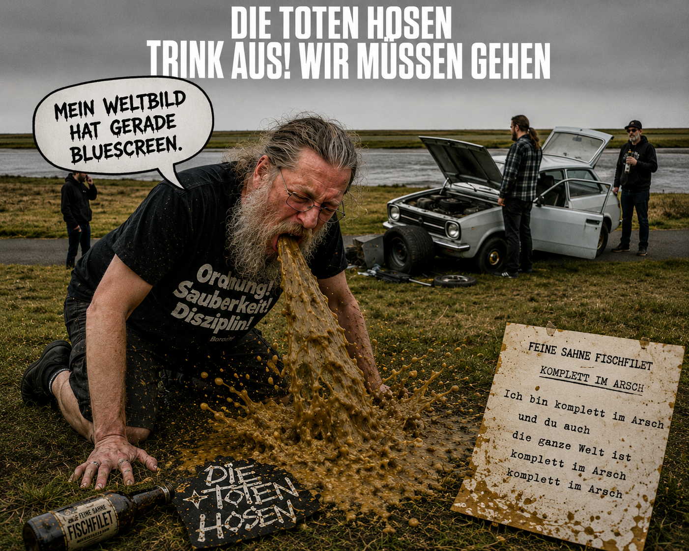

Review
DIE TOTEN HOSEN feat. FEINE SAHNE FISCHFILET - Komplett im Arsch

Random-Playlists sind hinterhältig.
Man denkt, man lässt einfach Musik laufen.
Ganz locker nebenbei.
Ohne Erwartung.
Dann poltert Feine Sahne Fischfilet rein.
Passt schon.
Kann nicht so viel schiefgehen.
Ich mag zwar keinen Scheiß-Punk mit Bläsern, aber geschenkt. Nicht jede Hupe ist gleich ein Verkehrsunfall.
„Komplett im Arsch“.
Jawoll. Geiler Song.
Dreckig und im Arsch.
Genau so muss das.
Und dann...
...stimmt irgendwas nicht.
Musikalisch? Ne. Nicht ganz.
Rhythmisch? Ne. Passt auch irgendwie.
Nicht am Text.
Sondern...
...ich höre eine Stimme. Und nicht eine der Stimmen, die mich zu fragwürdigen Handlungen verleiten. Ich höre...
Campino!
...
Campino?! What the fuck!?
Ich habe den Song ausgemacht.
Aus Reflex.
Noch einmal gestartet.
Vielleicht habe ich mich verhört.
Hatte ich nicht.
Campino.
Natürlich Campino.
Kurzer Faktencheck, bevor mein innerer Hosen-Hasser mit einem Klappstuhl durch die Küche rennt:
Das hier ist nicht Feine Sahne Fischfilet mit Campino.
Das sind Die Toten Hosen, die „Komplett im Arsch“ von Feine Sahne Fischfilet gecovert haben.
Mit Feine Sahne Fischfilet als Feature. Als Profi habe ich natürlich schnell herausgefunden, dass das vom Bonus-Coveralbum „Alles muss raus!“ kommt. Okay, steht unter dem Song auf YouTube. Egal.
Das gehört zum neuen und offiziell letzten Studioalbum der Hosen.
Hoffentlich!
Die Hosen verabschieden sich mit einem Coveralbum und greifen sich ausgerechnet diesen Song.
Ich weiß nicht, wer diese Idee hatte.
Aber sie ist so bekloppt, dass ich sie fast schon wieder respektieren muss.
Einen der besten Feine-Sahne-Songs nehmen.
Campino draufsetzen.
Und mich damit völlig unvorbereitet in meiner Küche erwischen.
Das ist keine normale Coverversion.
Das ist ein gezielter Angriff auf meine mühsam gepflegte Rolle als Toten-Hosen-Nörgler.
Ich habe mir diese Rolle über Jahre aufgebaut.
Mit uneingeschränkter Leidenschaft.
Mit fragwürdiger Fachkenntnis.
Mit erstaunlich viel Energie für eine Band, die mir völlig egal ist.
Das ist keine spontane Abneigung mehr.
Das ist Traditionspflege!
Und dann kommen diese Düsseldorfer Möchtegern-Punkrock-Rentner daher, packen „Komplett im Arsch“ auf ihr Abschieds-Ding und schaffen es, dass ich nicht sofort auf „Weiter“ drücke.
Frech.
Unverschämt.
Das Schlimmste daran?
Ich kann Campino hier nicht einmal ernsthaft etwas vorwerfen.
Der macht seinen Job.
Ordentlich sogar. Für jemanden, der in meiner kleinen Privatmythologie seit Schloss Bellevue ohnehin keine Bonuspunkte im Punk-Olymp sammelt.
Es wäre aber so viel einfacher gewesen, wenn er schief gesungen hätte.
Oder den Text vergessen.
Oder mitten im Refrain angefangen hätte, über Düsseldorf zu reden.
Aber nein.
Der Mann liefert einfach ab.
Unverschämtheit.
Ich höre also weiter.
Widerwillig.
Mit verschränkten Armen. Trotzig.
Mit demonstrativ schlechter Laune.
Es gibt Menschen, die betreten einen Raum und sofort wird die Stimmung besser.
Campino schafft etwas Besonderes.
Er betritt einen meiner Lieblingssongs und ich bekomme spontan schlechte Laune.
Diese Begabung muss man sich auch erst einmal erarbeiten.
Ich werde jetzt bestimmt nicht anfangen, Toten-Hosen-Shirts zu tragen, nur weil Campino einmal in einem Feine-Sahne-Song herumstehen durfte. Oder damals 1998 bei Bad Religions „Raise Your Voice“.
Da hört der Spaß auf.
Und ich sitze da wie ein beleidigter Gartenzwerg mit WLAN-Anschluss und drücke nicht auf „Weiter“.
Verdammte Scheiße.
Vielleicht ist genau das der eigentliche Punk-Moment an der ganzen Nummer.
Nicht, dass Die Toten Hosen Feine Sahne Fischfilet covern.
Sondern dass dieser Song es tatsächlich schafft, mich gegen meinen eigenen Willen dranzuhalten.
Nicht Campino hat mich überzeugt.
Feine Sahne Fischfilet haben es geschafft, dass ich einen Song mit Campino freiwillig zumindest einmal höre.
„Anti-Hosen-Front-4-Ever!“ Zwinkersmiley.